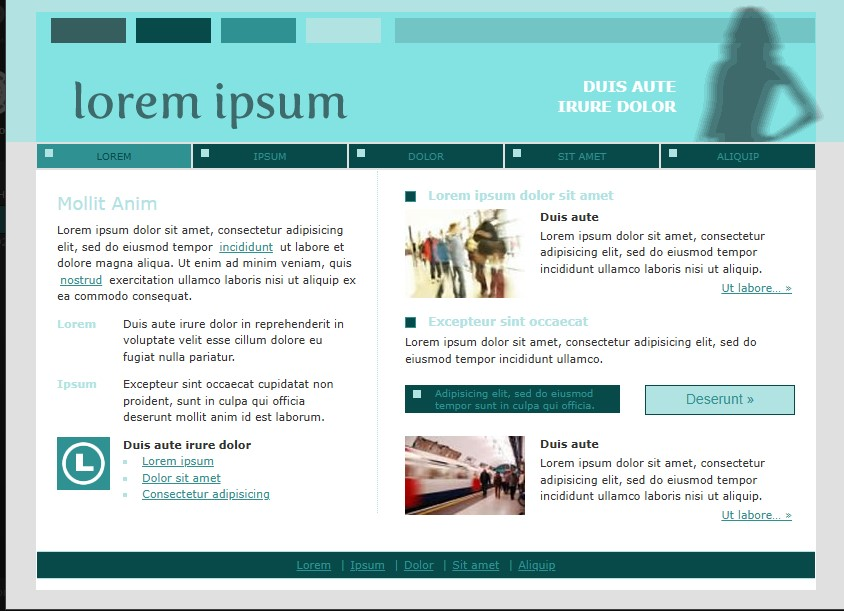

4 ТЕХНОЛОГИИ WEB
20HTML-страниц
2меню навигации
О сайте
По пояснительной записке разработан данный сайт на технологиях HTML5, CSS3 и JavaScript. 20 страниц, левое меню содержания ПЗ и правое меню защиты ДП.
Цветовая схема
Монохромная бирюзово-зелёная схема.

Таблица стилей
| Класс | Описание | Значение |
|---|---|---|
--primary | Основной акцент | #2F9292 |
--dark | Тёмный фон меню | #07444A |
.site-header | Шапка | position:fixed, height:92px |
.sidebar | Левое меню | width:270px |
.content-center | Область контента | flex:1, overflow-y:auto |
.right-sidebar | Правое меню | width:220px |
.anchor-active | Активный пункт | background:var(--primary) |
.section-title | Заголовок раздела | border-left:4px solid var(--primary) |
Пример CSS
:root {
--primary: #2F9292;
--dark: #07444A;
--light: #83E3E3;
}
.site-header {
position: fixed;
height: 92px;
background: var(--dark);
}Пример HTML
<header class="site-header">...</header>
<div class="sidebar"><nav class="toc-menu">...</nav></div>
<div class="main-content">
<div class="content-wrapper">
<div class="content-center">...</div>
<div class="right-sidebar">...</div>
</div>
<footer class="main-footer">...</footer>
</div>Макет страницы